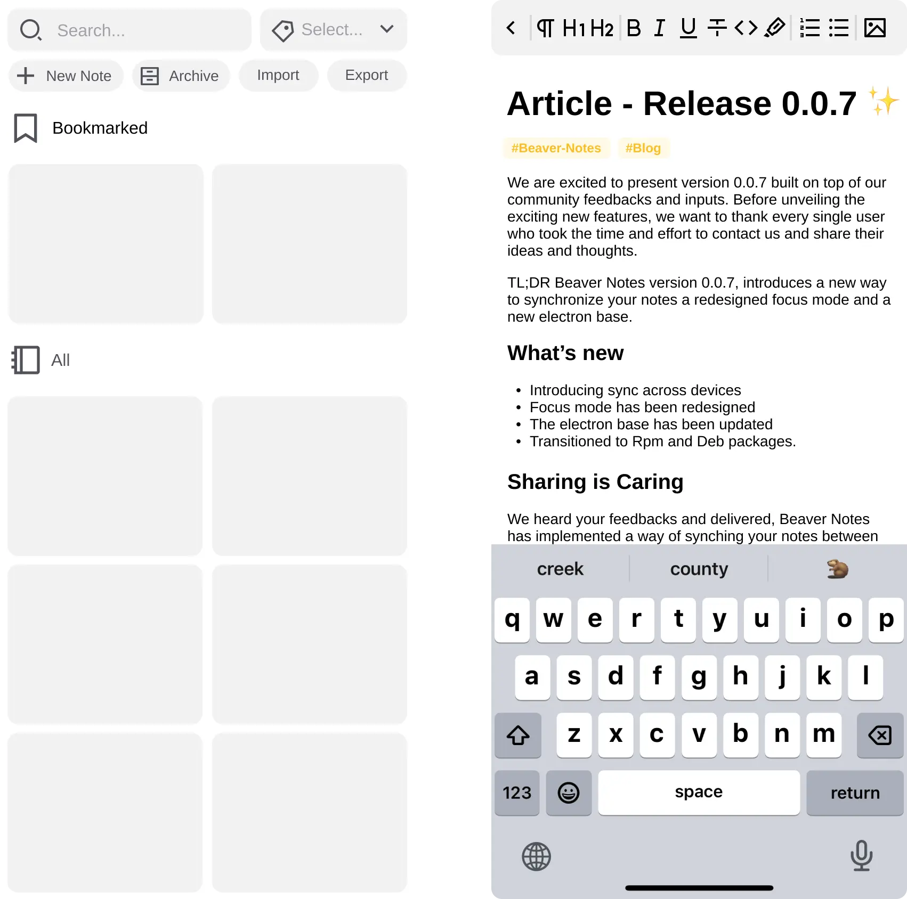

Beaver Notes v0.0.7 - The future awaits
Daniele Rolli | August 24 2023
We are excited to present version 0.0.7 built on top of our community feedbacks and inputs. Before unveiling the exciting new features, we want to thank every single user who took the time and effort to contact us and share their ideas and thoughts.
TL;DR Beaver Notes version 0.0.7, introduces a new way to synchronize your notes a redesigned focus mode and a new electron base.
- Introducing sync across devices
- Focus mode has been redesigned
- The electron base has been updated
- The electron base has been updated
- Transitioned to Rpm and Deb packages.
- To see the rest of the changelog, visit our GitHub.
Sharing is Caring
We heard your feedbacks and delivered, Beaver Notes has implemented a way of synching your notes between devices. After trying countless sync methods we have settled on one that needs close to minimum user interaction the only things you will need to do is select the path you want to import and export to in settings, this path should ideally be the one of a cloud provider or synching service installed on your device, like iCloud, Syncthing, Nextcloud etc. After that you’ll be able to export and import your notes by clicking on the two buttons in the sidebar.
Editor’s Tip: To keep your notes consistently synced across devices the first thing you should do when you open beaver notes is click the import button in the sidebar and then export them before closing the app.
A Better focus mode for better focus
We received some inputs on the focus mode and decided to act upon them, making the focus mode more visible while still keeping it minimal and intuitive so we decided to make it obvious to the user when focus mode is active by applying an orange border around the window this won’t be much of a distraction, however it will make clear that focus mode is on.
Editor’s Tip: Utilize focus mode to study or write without the distractions of a cluttered interface. To exit focus mode, hover your cursor over the top part of your note and click the focus mode toggle.
Electron vs Linux
Talking about the electron base, as soon as we got our hands on a linux machine and received feedbacks from our users we decided to act upon our shortcomings and update the electron base to fix the gpu process issues, see issue 2. This issue was solved in version 0.0.6-a which was an incremental fix, however, we decided to take things a step forward and move from electron 13.5 to 13.6.9 this will ensure better compatibility with current and newer linux machine and apple hardware like the M series MacBooks.
Hello Rpm and Deb
Moving our subject to how we distribute our app, we decided to let the people decide wether or not snap was a valuable choice for distributing our app on linux and most of our community make it loud and clear that rpm and deb packages were the way to go so we decided to fulfill your wishes and release a deb and rpm version of the app, for the users who don’t use a Debian or Fedora based distros we got you covered the AppImage version of the app will still we available no matter what linux distro you use.
What the future holds for Beaver
Well, we don’t want to get too fat head of our selves, however, we heard people’s concern about the lack of a mobile app some we decided it was about time to work on one, as of now the app is still just an idea however we already worked on some concepts and want to know your feedback, so let us know what you think about it, on top of that if you are willing to help well sure need an hand or two to develop this app, so, feel free to get in touch.
The beginning of something great
So in the end, this release marks a milestone the one of community feedback and involvement into the project, together we can shape our note taking journey to something great and empowering, please feel free to share you feedbacks and views and even contribute to the project whether you can code or not, your help is always appreciated. Thank you for your time, and please stay tuned for more app updates.
Discover more

Introducing Beaver Notes v0.0.6 - Elevate Your Note-Taking Experience! 🚀
Welcome to a new chapter of productivity and efficiency with Beaver Notes v0.0.6! We are excited to announce the latest update to our privacy-focused note-taking app that empowers you to capture, organize, and manage your ideas effortlessly.